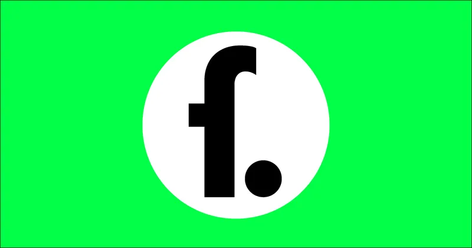
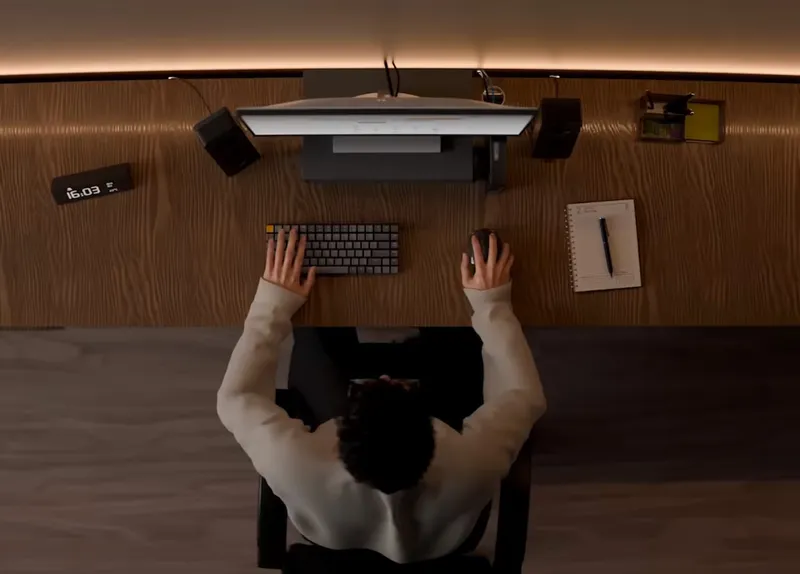
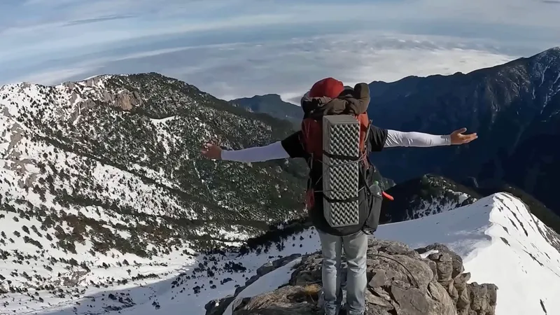

About
Born in 2023.
While we maintain an office in Amsterdam, our team is spread across Europe. Today, around 100 people work across our channels and podcast, which for now is available only in German.
YouTube outlet reaching over 5 million subscribers.
5 mil subscribers
This Is Fern.
We investigate, animate and tell stories that matter. Select projects are produced in partnership with established outlets, bringing their reporting to life.
more about usWe worked with
About us
Born in 2023.
We believe video is the future of journalism: a way to reach audiences beyond traditional media and deliver in-depth reporting in an increasingly brutal war for attention.
Our work began with animation, using it to visualize complex information and tell important stories that are otherwise hard to convey. Since then, we have expanded that approach to include investigative on-the-ground reporting and in-person interviews.

David Co-Founder
Jonas Also Co-Founder
About
While we maintain an office in Amsterdam, our team is spread across Europe. Today, around 100 people work across our channels and podcast, which for now is available only in German.

The team
The channel was originally founded by the team behind Simplicissimus and Hoog. Hoog has since stepped away to focus on other projects, aside from occasional voice-over work.

Electrify
Electrify isn’t involved in the creative process, and we remain editorially independent.

About us and our partners
Every sponsor segment is custom-made, animated, and designed to be part of the episode itself by being directly written into the narrative. This makes our partnerships truly native.
Cinematic visuals, deep research and fact based storytelling by a team of journalists and creatives is what makes fern a trusted voice and a safe, high-quality environment for brand partners.
We partner with brands that value high production quality, thoughtful storytelling and an intelligent, curious audience.


Do you want to collaborate?
Get in touch with Anna...Join Us
We are always looking for talent. Check out our current open roles and come join the team.
There are currently no jobs available.
around 100 people
FAQ
fern is a play on the German words “Fernweh” (a longing for distant places, or homesickness for a place you’ve never been) and “fernsehen” (to watch television). It’s also a plant in English, hence the green.
fern is the brainchild of German YouTubers David and Jonas (Simplicissimus, 2 Bored Guys), and Dutch YouTuber Hoog. He has since stepped back to focus on his main channel, but remains the voice behind some videos.
In 2025, we took an investment from Electrify to stabilize the company and reduce the day-to-day operational load on the founders. That allowed us to grow the team and focus on making better videos than ever. Electrify isn’t involved in the creative process, and we remain editorially independent.
We work with a team of dedicated 2D and 3D animators, and tend to use AI only in the background for non-creative tasks like upscaling, image extension, or file organization. Beyond legal and ethical questions, we believe people value work that other humans have put real care and intention into. We use generative AI only very selectively.